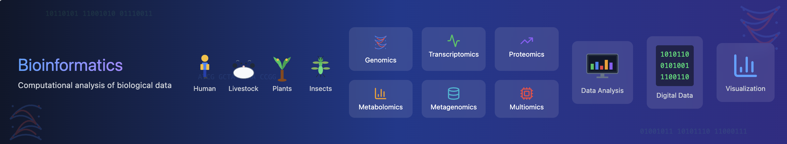

This is a space to share my curiosity in the area of informatics. Nowadays, informatics has become a prominent field due to the generation of large datasets that require sophisticated and powerful algorithms for their analysis. Bioinformatics is a subfield of informatics that focuses on the analysis of biological data, such as DNA sequences, protein structures, and gene expression profiles.
My goal is to provide a platform where I can share my knowledge and experience in the field of bioinformatics. I will be sharing my thoughts on the latest trends in the field, as well as my own research and projects. I hope that this page will be a valuable resource for anyone interested in bioinformatics and informatics in general.
Bioinformatics is a rapidly evolving field that is revolutionizing the way we understand and analyze biological data. It combines the power of computer science, statistics, and biology to develop tools and algorithms for the analysis of biological data.
Bioinformatics has a wide range of applications, from understanding the genetic basis of diseases to designing new drugs and therapies. By sharing my knowledge and experience in bioinformatics, I hope to inspire others to explore this exciting field.
Milestone achievements in bioinformatics include the Human Genome Project, which mapped the entire human genome, and the development of next-generation sequencing technologies, which have revolutionized the field of genomics. These advances have paved the way for personalized medicine, where treatments are tailored to an individual's genetic makeup.
On the Ecology and Evolutionary Biology side, bioinformatics is used to study the diversity and evolution of species, as well as their interactions with the environment. By analyzing DNA sequences and other biological data, researchers can reconstruct the evolutionary history of species, identify genes that are important for adaptation and speciation, and understand how ecosystems are changing over time.
Bioinformatics is also used to study the impact of human activities on the environment, such as deforestation, pollution, and climate change. By combining field observations with computational analyses, researchers can develop strategies for conserving biodiversity and mitigating the effects of environmental change.